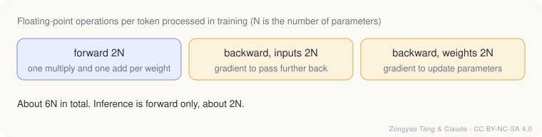
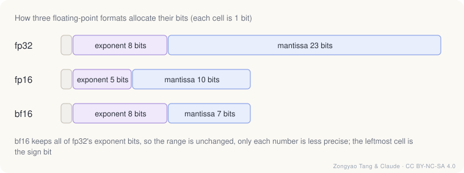

The thread: first build a yardstick, estimating how much arithmetic training actually needs → the first speed-up is to represent numbers with fewer bits → the second is almost free: round the sizes → finally, lay out every technique used in the video side by side and see which kind of bottleneck each one fights. This unit is the map for all later systems units, best read together with part 0.
Part 1 · Principles of deep learning1.5 Reproducing GPT-2: from model to efficient training
Translated by AI (Anthropic's Claude) from the Chinese edition. The Chinese original is the reference.
This unit answersIn a real training run, where does the time go? What does each speed-up technique save?
Follows 1.4: the same model, but now we care how fast it runs on the GPU. This is the map for all the systems units that follow.
- Training each token takes about 6N floating-point operations
- Fewer bits per number, half the data to move
- Round dimensions to multiples of 64 or 128: an almost free speed-up
- Each speed-up fights a different bottleneck
Explanation
1Training each token takes about 6N floating-point operations
N is the number of parameters. In the forward pass each parameter takes part in one multiply-add, about 2N operations; the backward pass computes two gradients, with respect to the inputs and to the weights, about 4N. Multiply by the number of tokens trained on and divide by the GPU's compute rate, and you have a theoretical lower bound on training time.
Count the matrix multiplications. 4.1 goes into detail: nearly all of a Transformer's arithmetic is in matrix multiplications. A linear layer multiplies its input by a weight matrix; for the input at one position, each weight takes part in one multiplication and one addition, 2 floating-point operations. Almost all of the model's parameters are elements of these weight matrices. So to process one token (one position):
- Forward: 2 operations per parameter, about 2N.
Backward. 1.1 explained that the backward pass computes two things at each layer:
- The gradient of the loss with respect to the layer's input (to pass on towards the front): one matrix multiplication the size of the forward one, about 2N.
- The gradient of the loss with respect to the layer's weights (to update the parameters): another matrix multiplication of the same size, about 2N.
The backward pass totals about 4N. Forward plus backward, each token takes about 6N floating-point operations.

Three matrix multiplications of the same size What it ignores. The two attention steps "Q times Kᵀ" and "times V" involve no parameters; their cost depends on the sequence length and is not counted. Normalisation and activation functions cost little and are not counted either. The embedding table's parameters are only looked up, never multiplied, yet they are counted in N. So it is an order-of-magnitude estimate, within ten or twenty percent for common configurations.
Use one: estimate how long training takes. Total arithmetic = 6N × the total number of training tokens. Divide by the hardware's actual rate and you have the time. GPT-2 with 124M parameters trained on 10 billion tokens: 6 × 1.24×10⁸ × 10¹⁰ ≈ 7.4×10¹⁸ operations. An A100 with a peak of 312 TFLOPS, even fully used, would take 6.6 hours; at 40% utilisation, about 16 hours. Do this sum before you start, and you know whether a plan is realistic.
Use two: compute MFU. As 0.2 explained: MFU = the arithmetic rate actually achieved ÷ the hardware's peak. The numerator is 6N × the measured tokens per second. It tells you how far you are from the hardware's limit.
Use three: compare models and hardware. A model 10 times larger costs 10 times as much per token. On a different GPU, its peak compute tells you roughly how throughput will change (provided no other bottleneck shows up first).
Inference has a matching estimate: forward only, about 2N per token. But as 4.1 explains, when generating word by word the bottleneck is not the arithmetic but memory bandwidth, and a different yardstick is needed.
An analogyLike estimating a house move: knowing how many boxes there are and how many can be carried per hour at most, you can work out the minimum number of hours.
So when you get a training job, estimate first: GPT-2 with 124M parameters trained on 10 billion tokens needs about 7.4×10¹⁸ operations. The ratio of actual throughput to this theoretical figure (the MFU) tells you how much room there is for optimisation.
- With a yardstick in hand, look at the speed-ups the video uses one after another. The first is the smallest change with the most obvious effect.
2Fewer bits per number, half the data to move
fp32 takes 4 bytes per number, bf16 only 2. Matrix multiplications switched to TF32 or bf16 can run on Tensor Cores, and the memory read and written is halved too. bf16 has as many exponent bits as fp32, so the same range of values, just less precision.

How the bits are divided decides the range and the precision The three parts of a floating-point number. A floating-point number consists of a sign, an exponent and significant digits (the mantissa). The exponent decides how large and how small the numbers can be (range); the significant digits decide how many digits are exact (precision).
Format Total bits Exponent Significand Range Precision fp32 32 8 bits 23 bits very large about 7 decimal digits fp16 16 5 bits 10 bits much smaller about 3 decimal digits bf16 16 8 bits 7 bits same as fp32 about 2–3 decimal digits bf16 can be seen as "fp32 with 16 bits cut off its significand": the exponent is kept intact, so it covers the same range as fp32, only each number is less exact. fp16 shrinks both ends.
Why it gets faster. Two independent reasons.
- *Tensor Cores become usable.* The GPU has hardware units dedicated to matrix multiplication; they require low-precision inputs and have an order of magnitude more compute than the ordinary units (4.5). This works on compute-bound matrix multiplications.
- *Half the data to move.* Each number goes from 4 bytes to 2. With the same memory bandwidth, twice as many elements can be read and written per second. This works on the bandwidth-bound operators (normalisation, activation functions and so on). Memory use halves too, leaving room for a larger batch.
TF32: a compromise that keeps the data type. The data stays fp32, but when doing matrix multiplications the Tensor Cores use only part of the significand internally. You get the first benefit above but not the second; in return, no code changes, just one switch. In Karpathy's video it is turned on first, before switching to bf16.
Why lower precision is acceptable. Training is full of noise to begin with: each batch's gradient is a biased estimate. The error from losing a few significant digits is far smaller than that noise. But a few places cannot be skimped:
- Parameter updates: each step's update is tiny relative to the parameter and would be rounded away in 16 bits. So the master copy of the parameters and the optimizer state stay in 32 bits (the 16 bytes of 7.2).
- Long accumulations, exponentials and logarithms: errors accumulate or overflow.
This is what "mixed" precision means: the parts with heavy arithmetic use 16 bits, the sensitive parts keep 32. Which operator uses which precision is arranged automatically by autocast, covered in 2.6.
bf16 or fp16. With its small range, fp16 turns very small gradients into zero and needs loss scaling as a remedy (2.6). bf16 does not have this problem and is the first choice today.
An analogyLike keeping accounts to three significant digits: almost no calculation is affected, and you write faster and use less paper.
So mixed precision is often the easiest speed-up: matrix multiplications in low precision, numerically sensitive places (accumulations, the loss, optimizer state) kept in fp32.
Used later in Round dimensions to multiples of 64 or 128: an almost free speed-upEach speed-up fights a different bottleneckautocast: one more stop on the way of each operator call, choosing the precision by the kind of operatorfp16 needs loss scaling; bf16 usually does notSourcesAccelerate bfloat16Accelerate: table of number formats- The second technique looks like superstition, but it has a very concrete hardware reason.
3Round dimensions to multiples of 64 or 128: an almost free speed-up
GPU kernels process data in blocks of a fixed size. When a dimension is not a multiple of the block size, the leftover block needs extra handling and often takes a slow path. In reproducing GPT-2 the vocabulary was padded from 50257 to 50304 (a multiple of 128): a few useless rows more to compute, yet faster overall.
The example in the video. GPT-2's vocabulary size is 50257, a very "ugly" number. Pad it to 50304 (128 × 393): the extra 47 words are never used, and the model gains some useless parameters and computation. Yet training gets a few percent faster.
The reason is in how kernels are written. Parts 3 and 4 show it again and again: kernels on the GPU process data in "blocks".
- Threads execute in groups of 32 (warps).
- Matrix multiplication kernels cut the matrices into small tiles of a fixed size, such as 16×16, 64×64 or 128×128, and process them tile by tile (3.3, 4.5).
- One Tensor Core instruction processes a small matrix of a fixed shape.
When a dimension is an exact multiple of the block size, every block is full and the kernel takes its most optimised path.
When it is not, a partial "edge" is left over at the end. Kernels have several ways to handle that edge, all with a cost:
- Handle the edges with a separate piece of general but slower code.
- Pad the edges into full blocks, compute, and throw away the extra results (needing extra copies or masks).
- Switch the whole operation to an implementation that works for any size but is not as fast.
Which one happens depends on the library's implementation; from outside you cannot see it, it is just somewhat slower.
Why powers of 2. The block sizes above are almost all powers of 2 (16, 32, 64, 128). A number that is a multiple of 128 is also a multiple of 64, 32 and 16, so it divides evenly whatever block size the kernel uses inside. "Take a power of 2, or a multiple of 64 or 128" is therefore a safe choice that needs no knowledge of the internals.
Which dimensions are worth rounding. The hidden dimension, the dimension of each head (1.4: usually 64), the MLP's intermediate dimension, the vocabulary size, the batch size, the sequence length. This is also why common model configurations are full of numbers like 768, 1024 and 4096.
The more general point. This is one face of "batching" from 0.1: hardware and libraries are optimised for regular data in whole blocks. Making the shape of the data fit the hardware's blocks is far cheaper than making the hardware cope with irregular data. Fixing shapes to avoid recompilation in 2.5 and fixing tensor sizes to reduce memory fragmentation in 2.1 are the same principle in different layers.
An analogyLike packing boxes: when the goods are an exact multiple of the box size, every box is full; when they are a little off, the leftovers need boxes of their own.
So when designing a model, make the hidden dimension, the head dimension and the vocabulary size powers of 2 or multiples of 64 or 128 wherever possible.
- The video uses five or six techniques in all, making training an order of magnitude faster. Put them side by side and you find they do not overlap.
4Each speed-up fights a different bottleneck
TF32/bf16 speed up matrix multiplications (compute); torch.compile merges several element-wise operators into one kernel (memory bandwidth and launch overhead); FlashAttention never writes out the N×N attention matrix (memory bandwidth); gradient accumulation and multi-GPU training work on memory and scale.
Rearrange the techniques from the video by the bottleneck each one fights. The classification of bottlenecks uses the language of part 0.
Technique Bottleneck it fights How Unit that explains it TF32, bf16 Compute; bandwidth Tensor Cores; half the data 2.6, 4.5 torch.compile Overhead of giving orders; bandwidth Removes per-operator overhead; fusion 2.5, 4.2 Flash Attention Bandwidth; memory The N×N matrix is never written out 4.4 Round dimensions Compute Kernels take their fast path The previous card fused AdamW Overhead of giving orders; bandwidth The optimizer's dozen steps merged into one kernel 2.6 Gradient accumulation Memory Several small batches make one large batch 1.3 Multi-GPU DDP Scale Data split across several GPUs 7.1 Some observations.
- *None of them is a cure-all.* Each works only on the kind of bottleneck it targets. If a model's time is all in matrix multiplications, torch.compile helps little; if it is all in giving orders, switching to bf16 does nothing.
- *They can be combined, but the gains do not simply multiply.* Remove one bottleneck and another becomes the new bottleneck. In the video, how much each added technique gains depends on "whose turn it is to be the bottleneck" at the time. This is the first idea of 0.1.
- *Order matters.* Do the cheap ones with large gains first (precision, compilation), then the ones that need code changes.
How to know which kind your bottleneck is. Not by guessing; by measuring (0.2):
- Double the batch and see whether the time doubles too (2.3): tells whether it is overhead-bound.
- Feed the same batch again and again (2.4): tells whether it is data-bound.
- Look at the share of GPU time spent in matrix multiplications in the profiler (4.1): tells how large the compute-bound part is.
- Compute the MFU (0.2): tells how far from the limit you are overall.
This table is the table of contents for the rest of the course. Part 2 covers the techniques in the framework layer, parts 3 and 4 why they work in the kernel layer, and parts 5–7 communication once the scale goes up. Reading any later unit, you can come back to this table and ask: which kind of bottleneck is it fighting? 11.1 walks through the table again with several complete cases.
An analogyLike speeding up a restaurant: faster stoves (compute), a smoother path for preparing ingredients (bandwidth), fewer errands back and forth (overhead), and more branches (multiple GPUs).
So before using any technique, ask which thing it saves, then confirm with a profiler. Each later part goes deep into one of these.
Builds on Fewer bits per number, half the data to move"Slow" on the pipeline comes in only four kinds: waiting for data, on compute, for orders, for the other GPUsFive ideas come back in every layerSourcesAccelerate chapter 1: breaking down the training process
Putting it together
Training needs about 6N floating-point operations per token, from which the theoretical limit and the MFU can be estimated. Low precision puts matrix multiplications on Tensor Cores and also halves the data read and written. Round dimensions keep kernels off their slow paths. Each speed-up fights a different bottleneck: compute, bandwidth, overhead, memory; before using one, ask which of these it saves.
Test yourself
Without looking back at the explanation, say it in your own words.
- How is "about 6N floating-point operations per training token" estimated? What is it good for?
- How do fp32, fp16 and bf16 differ? Why does lowering precision make training faster?
- Why are tensors faster when their dimensions are multiples of 64 or 128?
- The speed-ups used in reproducing GPT-2: which kind of bottleneck does each one fight?